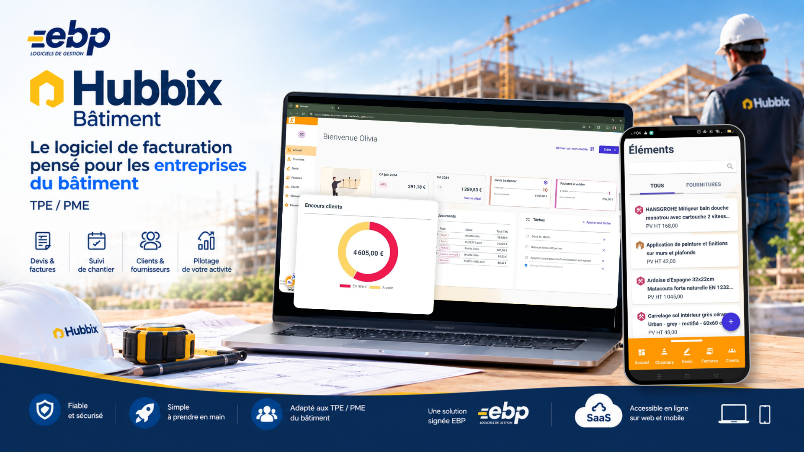

Concevoir de zéro une nouvelle expérience SaaS pour les professionnels du bâtiment

En 2022, nous avons lancé un projet ambitieux : construire de zéro une nouvelle solution SaaS dédiée aux TPE et PME du bâtiment.
L'objectif était de proposer une alternative moderne à une solution historique, Open Line, disponible en on-premise et dont l'expérience devenait progressivement moins adaptée aux attentes des utilisateurs.
Le nouveau produit devait être :
Le défi était donc de réussir à simplifier une activité complexe sans simplifier à l'excès le métier.
J'étais responsable de l'ensemble du périmètre UX/UI de Hubbix Bâtiment.
J'ai rapidement gagné en autonomie et pris en charge la démarche UX de bout en bout :
Je travaillais au sein d'une équipe de 13 personnes :
Mon rôle ne se limitait pas à concevoir les interfaces. Je devais également :
Nous avons commencé par une phase de discovery de près de deux ans, destinée à construire le produit progressivement avant son lancement.
Accompagnée au début par le Lead Designer, j'ai contribué à définir la stratégie UX et à mettre en place une démarche inspirée du Design Thinking.
Nous avons cherché à comprendre :
J'ai mené des interviews utilisateurs auprès d'un paneliste et de clients internes EBP.
Nous avons ensuite utilisé différents outils de recherche et de cadrage :
Ces ateliers réunissaient des profils très différents : produit, développement, qualité, marketing, commerce et expertise métier.
L'enjeu était autant de comprendre les utilisateurs que de faire converger l'équipe autour d'une compréhension commune du problème.
L'un des sujets les plus structurants du projet a été la conception de l'éditeur de devis et de factures.
Au départ, l'idée naturelle était de reprendre la grille utilisée par la solution de gestion commerciale existante.
Mais en analysant son fonctionnement, j'ai identifié un problème : la grille était puissante, mais complexe à utiliser et peu adaptée à l'expérience que nous voulions proposer aux utilisateurs du bâtiment.
J'ai donc décidé de challenger cette approche. J'ai étudié les solutions concurrentes, analysé leurs choix d'interface et construit une proposition différente.
Cette décision n'a pas été simple.
Il fallait convaincre mon manager, puis défendre cette proposition auprès du Lead Designer et des équipes de gestion commerciale, alors que leur solution existante constituait une référence interne.
Le choix de ne pas reprendre leur grille a également créé des tensions avec l'UX Designer en charge de cette équipe.
J'ai néanmoins défendu ma proposition en m'appuyant sur :
Cette expérience m'a appris qu'être Product Designer implique parfois de challenger l'existant, même lorsque celui-ci est devenu une référence dans l'organisation.
Nous avons complètement repensé l'interaction avec les devis et factures. L'objectif était de rendre l'édition :
Nous avons réduit la hauteur des lignes afin de permettre aux utilisateurs d'afficher davantage d'informations simultanément. Nous avons également introduit :
L'éditeur est ainsi devenu davantage qu'une simple grille de saisie : un véritable espace de construction et de structuration du document commercial.
Cette nouvelle interface introduisait des composants très différents de ceux utilisés dans la gestion commerciale existante.
Il a donc fallu trouver comment intégrer cette nouvelle expérience au Design System, tout en conservant sa cohérence avec le reste de la gamme Hubbix.
Cette étape a demandé beaucoup d'itérations et de discussions avec les équipes. Mais le choix s'est révélé durable.
Quelques années plus tard, l'équipe de gestion commerciale s'est fortement inspirée des principes et composants que nous avions introduits pour Hubbix Bâtiment. La direction que nous avions dû défendre est finalement devenue une source d'inspiration pour faire évoluer l'existant.
Pour moi, c'est l'un des exemples les plus représentatifs de mon rôle sur ce projet : ne pas simplement appliquer les standards existants, mais être capable de les faire évoluer lorsqu'ils ne répondent plus suffisamment aux besoins.
Nous avons rapidement mis les prototypes face aux utilisateurs.
J'ai mené plusieurs tests utilisateurs afin de challenger nos principes UX et UI et d'identifier les incompréhensions.
Un exemple significatif concerne la création d'une facture.
Notre première approche reposait sur un stepper. Les tests ont montré que cette navigation par étapes rendait le processus moins naturel et compliquait la compréhension globale du document.
Nous avons donc remis en question le principe. Nous avons remplacé le stepper par un écran unique, organisé autour de composants pouvant être développés ou réduits selon les besoins.
Cette approche permettait aux utilisateurs de conserver une vision globale de leur document tout en travaillant facilement sur les différentes sections.
Le design n'était donc pas considéré comme une réponse définitive : chaque hypothèse pouvait être remise en question par l'observation des utilisateurs.
Une fois les principes UX validés, j'ai accompagné le développement du produit jusqu'au lancement.
J'ai conçu environ 50 écrans en responsive design, couvrant les principaux parcours et fonctionnalités de l'application.
Chaque fonctionnalité était conçue en collaboration avec la PO, la PM, les consultants métier et les développeurs.
Chaque semaine, j'animais un point maquettes avec les parties prenantes concernées. L'objectif était de présenter les fonctionnalités à venir suffisamment tôt pour :
Tous les quinze jours, une Design Review avec la PO et un développeur permettait de vérifier la cohérence entre les maquettes et le produit développé. Lorsque nécessaire, nous créions des User Stories correctives.
Cette organisation m'a permis de maintenir un lien permanent entre intention de design et réalité du produit.
Avant le lancement, nous avons organisé un programme Early Adopters de 30 utilisateurs pendant environ un mois et demi.
L'objectif était de faire tester le produit en conditions réelles et en autonomie. Nous cherchions à répondre à plusieurs questions :
Les utilisateurs comprennent-ils naturellement le produit ?
Quelles fonctionnalités essentielles nous manquent-ils ?
Quelles attentes doivent être traitées en priorité ?
Sommes-nous capables de déployer, accompagner et supporter correctement le produit ?
Le programme nous a également permis de tester nos propres processus internes :
Les retours des Early Adopters ont directement influencé la roadmap. Certaines fonctionnalités ont notamment été repriorisées, comme les relances par e-mail et l'intégration des factures de situation.
Après le lancement, mon rôle a progressivement évolué.
Le produit étant désormais bien avancé, j'ai réduit le temps consacré à la conception UI pour me concentrer davantage sur l'observation des usages.
J'ai notamment utilisé Microsoft Clarity, puis exploré Heap, afin de comprendre comment les utilisateurs utilisaient réellement le produit.
Cette approche m'a permis d'identifier de nouveaux pain points et de proposer des améliorations basées sur les comportements observés.
Nous avons progressivement constaté une baisse des tickets support, signe que certaines améliorations contribuaient à rendre le produit plus compréhensible et plus autonome.
Cette étape a marqué une évolution importante dans ma pratique : passer d'une UX principalement fondée sur la recherche et les tests à une approche combinant données qualitatives et données comportementales.
L'utilisation des données m'a également amenée à élargir ma réflexion au-delà de Hubbix Bâtiment.
J'ai beaucoup milité pour développer des pratiques d'observation au sein de l'équipe design et pour faciliter l'accès aux données produit.
J'ai commencé à réfléchir à une stratégie permettant de croiser les données provenant de plusieurs équipes :
L'objectif était de mieux comprendre nos clients en combinant leurs comportements, leurs demandes et leurs interactions avec EBP.
J'ai également exploré de nouveaux outils d'analyse et les possibilités offertes par l'IA pour accélérer l'analyse des données et enrichir la pratique UX.
Après plusieurs années immergée dans le marché du bâtiment, j'ai progressivement développé une connaissance fine :
Cette connaissance m'a permis de prendre davantage de recul et de contribuer à une réflexion plus long terme sur le produit.
J'ai notamment commencé à anticiper l'impact de nouvelles technologies comme le machine learning et l'IA sur les usages et sur l'expérience utilisateur.
Mon rôle est ainsi progressivement passé de :
« Comment concevoir cette fonctionnalité ? »
« Quel problème devons-nous résoudre, pourquoi, et comment faire évoluer le produit dans la durée ? »
En deux ans, nous sommes passés de la discovery au lancement d'un nouveau produit SaaS.
Au-delà de ces chiffres, le projet a permis de construire une expérience plus simple et plus accessible pour les professionnels du bâtiment, tout en conservant la profondeur nécessaire à leurs usages métier.
L'un des signaux les plus intéressants a été la baisse progressive des tickets support après les améliorations du produit.
Et surtout, certains choix de conception initialement controversés ont ensuite inspiré l'évolution d'autres produits de la gamme.
Hubbix Bâtiment a été bien plus qu'un projet de conception d'interface.
Il m'a permis de développer une posture de Product Designer autonome, capable d'intervenir sur l'ensemble du cycle de vie d'un produit :
J'y ai appris à défendre une vision sans perdre la capacité d'écoute, à challenger l'existant sans ignorer les contraintes de l'organisation, et surtout à considérer le design comme un outil de décision produit, et pas uniquement comme une étape de conception.
C'est cette évolution — de l'UX/UI vers une approche plus stratégique, collaborative et data-driven — qui représente pour moi la dimension la plus importante de cette expérience.